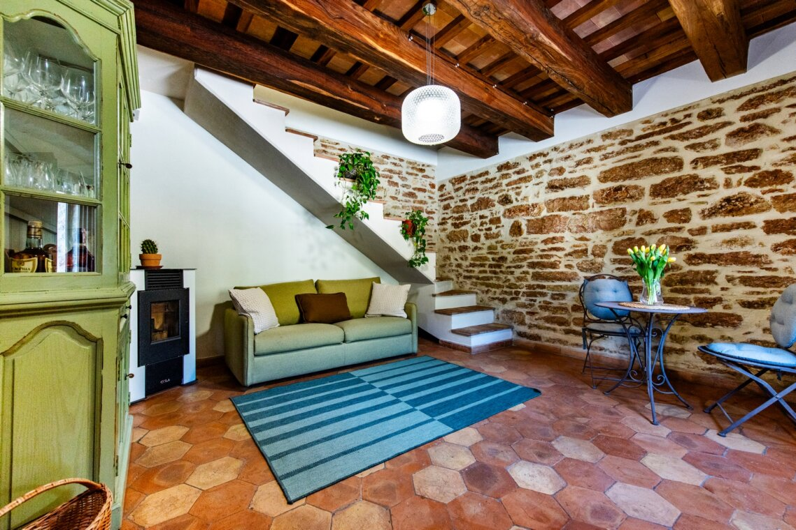
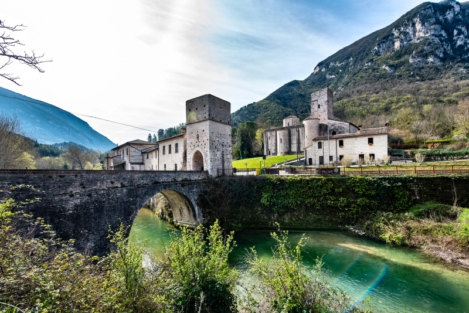
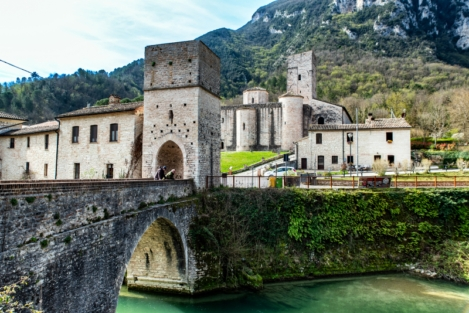
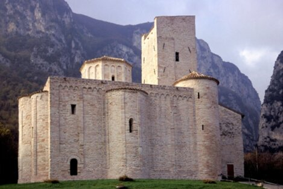

All'interno della nostra struttura troverete un'ampia cucina e un soggiorno spazioso, arredati con tutto il necessario per rendere il vostro soggiorno confortevole e piacevole.
All'esterno, un giardino privato vi permetterà di rilassarvi ascoltando la magica voce del Sentino e di ammirare la Gola di Frasassi.
La nostra struttura dispone di due camere con bagno privato, perfette per garantire comfort e privacy agli ospiti.



Abbazia di San VittoreAprire le finestre e trovarsi faccia a faccia con la storia qui è possibile.
Dalla camera della nostra casa vacanze, il monumentale Ponte Romanico di San Vittore delle Chiuse è il primo saluto del mattino.
Una vista esclusiva che trasforma ogni risveglio in un viaggio nel tempo, tra il mormorio del fiume Sentino e il fascino millenario dell'Abbazia di San Vittore.